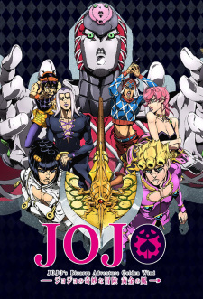

JoJo no Kimyou na Bouken Part 1 e 2
O ano é 1868; o nobre inglês George Joestar e seu filho Jonathan ficam endividados com Dario Brando após serem resgatados de um incidente de carruagem. O que os Joestars não percebem, no entanto, é que Dario não tinha a intenção de ajudá-los; ele acreditava que estavam mortos e estava tentando saquear seus pertences. Após a morte de Dario 12 anos depois, George esperando pagar sua dívida adota seu filho, Dio.
Enquanto ele publicamente elogia seu novo pai, Dio secretamente planeja roubar a fortuna dos Joestar. Seu primeiro passo é criar uma divisão entre George e Jonathan. Ao constantemente superar seu irmão adotivo, Dio firma firmemente seu lugar na família Joestar. Mas quando Dio empurra Jonathan longe demais, Jonathan o derrota em uma briga.
Anos depois, os dois parecem ser amigos próximos para o mundo exterior. Mas os problemas surgem novamente quando George adoece, pois Jonathan suspeita que Dio de alguma forma está por trás do incidente e parece que ele tem mais truques na manga.

JoJo no Kimyou na Bouken Part 3: Stardust Crusaders
Anos após um antigo mal ter sido resgatado das profundezas do mar, Joutarou Kuujou está tranquilamente dentro de uma cela de prisão japonesa. Ele não cometeu nenhum crime, mas exige não ser libertado, acreditando que foi possuído por um espírito maligno capaz de prejudicar aqueles ao seu redor. Preocupada com seu filho, Holy Kuujou pede ao seu pai, Joseph Joestar, para convencer Joutarou a sair da prisão. Joseph informa ao seu neto que o "espírito maligno" é na verdade algo chamado "Stand", a manifestação física do espírito de luta de alguém que pode adotar uma variedade de formas mortais. Após uma briga acalorada com o amigo de Joseph, Muhammad Avdol, Joutarou é forçado a sair de sua cela e começa a aprender como controlar o poder de seu Stand.
No entanto, quando um Stand desperta dentro de Holy e ameaça consumi-la em 50 dias, Joutarou, seu avô e seus aliados devem procurar e destruir o vampiro imortal responsável por sua condição. Eles devem viajar pela metade do mundo até o Cairo, Egito, e ao longo do caminho, travar batalhas com ferozes usuários de Stand determinados a impedi-los. Se Joutarou e seus aliados falharem em sua missão, a humanidade está destinada a um destino sombrio.

JoJo no Kimyou na Bouken Part 4: Diamond wa Kudakenai
O ano é 1999. Morioh, uma cidade normalmente tranquila e pacífica, recentemente se tornou um foco de atividades estranhas. Joutarou Kuujou, agora um biólogo marinho, dirige-se à misteriosa cidade para encontrar Jousuke Higashikata. Embora os dois possam parecer estranhos à primeira vista, Jousuke é na verdade o filho ilegítimo do avô de Joutarou, Joseph Joestar. Quando se encontram, Joutarou percebe que pode ter mais em comum com Jousuke do que apenas uma relação de sangue.
Junto com o manso Kouichi Hirose e o barulhento Okuyasu Nijimura, o grupo se dedica a investigar recentes desaparecimentos e outras ocorrências suspeitas dentro de Morioh. Auxiliados pelo poder dos Stands, os quatro homens encontrarão perigo a cada esquina, pois cabe a eles desvendar os segredos da cidade antes que outro ocorra.

JoJo no Kimyou na Bouken Part 5: Vento Aureo
Na cidade costeira de Nápoles, a corrupção está em alta—a polícia conspira abertamente com bandidos, as drogas correm soltas entre os jovens, e a máfia governa as ruas com punho de ferro. No entanto, diversos encontros fatídicos em breve ocorrerão.
Entra Giorno Giovanna, um garoto de 15 anos com uma conexão excêntrica com a família Joestar, que ganha a vida com empregos de meio período e furtos. Além disso, ele é dotado da inexplicável habilidade Stand de dar e criar vida—fazendo plantas crescerem do chão e transformando objetos inanimados em animais vivos, uma habilidade que ele apelidou de "Gold Experience". Fascinado pelo poder dos gangsters locais, Giorno sonha em subir em suas fileiras e se tornar um "Gang-Star", uma façanha possível graças ao seu encontro com Bruno Bucciarati, um membro da gangue Passione com seu próprio senso de justiça.
JoJo no Kimyou na Bouken: Ougon no Kaze acompanha as empreitadas de Giorno após se juntar à equipe de Bruno enquanto trabalha sob a Passione, enfrentando outros gangsters e secretamente tramando derrubar seu misterioso chefe.

JoJo no Kimyou na Bouken Part 6: Stone Ocean
Forças conspiradoras incriminam Jolyne Kuujou por um crime imprudente, levando-a à infame Prisão de Green Dolphin Street. Assim como seu pai Joutarou, Jolyne é ousada, corajosa e justa; ela protesta contra sua sentença injusta e rapidamente descobre as circunstâncias sinistras que a levaram à prisão.
Um presente de seu pai ausente concede a Jolyne o poder de Stone Free, uma habilidade sobrenatural conhecida como Stand que lhe permite desvendar seu corpo em fios. Jolyne usa Stone Free para abrir caminho pela prisão, recrutando novos aliados—Ermes Costello e Foo Fighters—para ajudá-la em sua investigação. Juntas, as mulheres destemidas lutam para descobrir a ameaça por trás de Whitesnake, um Stand inimigo responsável pelos prisioneiros cada vez mais perigosos que estão atrás da vida de Jolyne.
Através de Jolyne, a linhagem Joestar confronta o legado de seu verdadeiro inimigo. Jolyne e seus amigos correm para impedir um plano desastroso e pôr fim a um mal culminante.